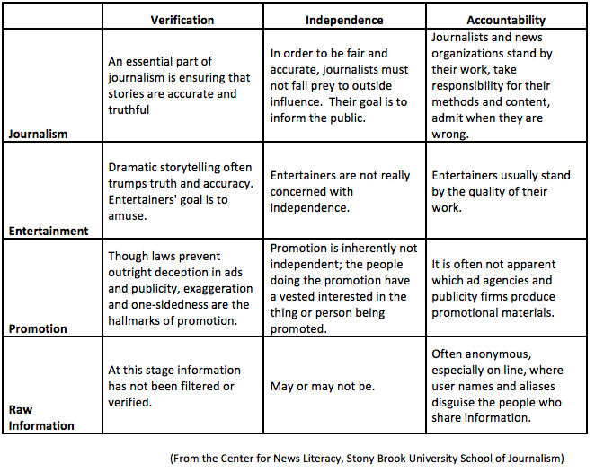

Trainees Edition
Trainers Edition
Trainees Edition
Trainers Edition
MODUL 12: RAZLIKOVANJE MED NOVICAMI IN DRUGIMI MEDIJSKIMI VSEBINAMI
Opis modula
Glavni namen tega modula je udeležencem predstaviti, kako ločiti novice od drugih medijskih vsebin. Sekundarni cilj je usmerjanje izvajalcev usposabljanja, ki vsebino tega modula uporabljajo pri izobraževanju svojih udeležencev. V skladu s temi cilji so zajete opredelitve novic in drugih medijskih vsebin, kot so oglaševanje, promocija, publiciteta, propaganda, surove informacije in zabava. Glavne značilnosti novic, ki so ključne za razlikovanje med novicami in drugimi vsebinami, "univerzalni dejavniki novic", bodo pojasnjene na ustreznih primerih. V tem modulu so zajete smernice za poučevanje tega predmeta.
Udeleženci, ki bodo uspešno zaključili ta modul, bodo znali:
- prepoznati, kaj so novice in katere so njihove glavne značilnosti (preverjanje, neodvisnost in odgovornost)
- prepoznati druge medijske vsebine in jih razlikovati od novic.
Trainers who successfully complete this module, will be able to demonstrate an understanding of the guidelines for teaching the subject.
Predavatelji, ki bodo uspešno zaključili ta modul, bodo lahko pokazali razumevanje smernic za poučevanje tega predmeta.
Struktura modula
Ta modul je sestavljen iz naslednjih delov:
- Opis modula (cilji, opis vsebine in učni rezultati)
- Struktura modula
- Smernice za udeležence usposabljanja
- Guidelines for Trainers (preparation, methods, and tips)
- Smernice za izvajalce usposabljanja (kako se pripraviti, metode za uporabo in nasveti za izvajalce usposabljanja)
- Vsebina (študijsko gradivo in vaje)
- Kviz
- Viri (reference in priporočeni viri ter videoposnetki)
Glavni cilji modula, opis vsebine in učni rezultati so pojasnjeni v delu Opis modula. Smernice za udeležence usposabljanja vključujejo navodila in predloge za udeležence izobraževanja. Smernice za izvajalce usposabljanja vodijo izvajalce usposabljanja skozi različne faze usposabljanja in vsebujejo nasvete, ki bi lahko bili koristni pri poučevanju predmeta. Vsebina vključuje vsa študijska gradiva in vaje, povezane z vsebino. Kviz vključuje vprašanja z več možnostmi izbire in/ali resnična/nepravilna vprašanja, s katerimi lahko udeleženci usposabljanja preverijo svoj napredek. Viri vsebujejo dve komponenti: reference in priporočene vire za nadaljnje branje in študij. Reference so seznam virov, navedenih v vsebinskem delu. Priporočeni viri so sestavljeni iz seznama dodatnih virov in videoposnetkov, ki jih priporočamo za branje in gledanje, da bi se naučili več o temi.
Smernice za udeležence usposabljanja
Od udeležencev se pričakuje, da bodo prebrali besedilo in naredili vaje. Dodatne informacije lahko poiščejo v priporočenih virih. Učencem priporočamo, da po končanem študiju vsebine opravijo kviz, s katerim bodo ocenili svoj napredek.
Guidelines for Trainers
Guidelines for Trainers includes suggestions and tips for trainers on how to use the content of this module to train learners about sources for reliable information. Trainers can revise the study material if needed.
Preparation
Preparing a presentation (PowerPoint/Prezi/Canva) which is supported by visual materials is strongly suggested. It is also suggested that the examples used, and the exercises recommended should be those which are most familiar to the target group. Use of local or well-known issues help to maintain the attention of learners.
Getting Started
A short Kviz (3 to 5 questions) in Kahoot or Mentimeter can be used at the beginning for engaging participants in the topic. The Kviz can also be used as a motivational tool, as well as a tool to check trainees’ existing knowledge on the subject. Some examples for questions might be:
- What is news?
- What is the difference between promotion and news?
- How might one distinguish between news and entertainment?
- What does accountability mean?
Methods to Use
Various teaching methods can be used in combination with each other during the training. Methods such as:
- Lecturing
- Group work
- Individual work
- Self reflection
Tips for Trainers
Warming-up
An effective way of involving participants and their learning expectations is to ask a few preliminary questions about how news is distinguished from other media content. For instance, learners might be asked: Can you give an example of potential differences in media content? The warm-up activity may contain the following elements:
- prepare different examples of media content (e.g. news, advertisement, entertainment)
- ask participants whether their example is news, or not
- ask participants to share and explain their answers, and how they came to their conclusion
After the activity, make sure that participants understand that there are differences in media content.
Presenting the Objective of the Lesson
The objective of the lesson should be made clear. Following the warm-up questions, it will be easier to clarify the objectives.
Presenting the Lesson Content
While presenting the content, make sure to interact with the learners, and encourage them to participate actively.
Before:
- Before the lesson, prepare examples of different media content.
During:
- At the beginning of the lesson ask participants some questions such as:
- What do they know about news and other media content?
- What is news?
- How might one distinguish news from other media content, such as raw information, promotion?
- What might be the consequences of accepting media content other than news, as news?
- What is the most appropriate way to distinguish news from other media content?
- While introducing the module contents:
- Ask participants to give examples of different media content.
- Make comments on their examples.
Afterwards:
- Make sure participants understand that here is a variety of media content.
- Review and elaborate on the importance of distinguishing news from other media content.
- Ask participants to provide their own examples of what is, or is not news. Ask them to support their choice using the module contents.
Suggestions:
- Be sure to support your lessons with local, or well-known examples and exercises.
- When you choose examples, make sure that they fit well with the definition of the media content.
Conclusion
Give a short summary, and ask questions which would help underline the most important content and practises of the lesson.
Vsebina: Razlikovanje med novicami in drugimi medijskimi vsebinami
Uvod
Prepoznati ali razlikovati novice od drugih medijskih vsebin je zelo pomembno, vendar to ni vedno enostavno. Mediji so vse, kar deluje kot kanal za posredovanje informacij. Lahko je vse, kar prenaša informacije od ene osebe ali kraja do druge (Checkology Glossary, 2021). Informacije, ki se prenašajo prek različnih vrst medijev, morajo biti "zanesljive". Zanesljive informacije imajo tri glavne značilnosti: preverjanje, neodvisnost in odgovornost (Digital Resource Center, 2021). Hornik, Anzalone in Spikes (2018, str. 192) kot koncept novičarske pismenosti uporabljajo "informacijske soseske", ki naj bi pomagale razlikovati med različnimi vrstami informacij: novinarstvo, zabava, oglaševanje, promocija, propaganda in neobdelane informacije (glej preglednico 1). Soseska novic ali novinarstva je edina, ki ima preverjanje, neodvisnost in odgovornost. Novice morajo iti skozi novinarski postopek, ki vključuje vse tri glavne značilnosti. Večina drugih medijskih vsebin nima teh treh glavnih značilnosti, zato so včasih meje med različnimi medijskimi vsebinami lahko zabrisane.
Opredelitev pojmov (Hornik et al., 2018):
- Preverjanje je postopek, ki ugotavlja ali potrjuje točnost ali veljavnost novinarskega poročanja.
- Neodvisnost je svoboda od vpliva ali podpore zunanjih oseb.
- Odgovornost je prevzemanje odgovornosti z imenom in priimkom za resničnost in zanesljivost novinarskega poročila.
Preglednica 1: Informacijska soseščina

Ta modul bo udeležencem pomagal prepoznati in razložiti značilnosti novic v primerjavi z drugimi medijskimi vsebinami.
Novice
Novice so "pravočasne informacije, ki so v javnem interesu, se delijo in so predmet novinarskega postopka preverjanja ter zanje neposredno odgovarja neodvisen posameznik ali organizacija" (Hornik et al., 2018, str. 193). Novice morajo obveščati občinstvo s poštenim in nepristranskim poročanjem ter morajo biti nepristranske glede na osebno mnenje avtorja. Včasih je lahko meja med novicami in mnenji o njih ali med novicami in drugimi medijskimi vsebinami zabrisana. Samo novice imajo potrebne značilnosti preverjanja, neodvisnosti in odgovornosti. Novinarstvo zahteva vestno prizadevanje za zbiranje in sporočanje čim bolj natančnih informacij, njihovo preverjanje in preverjanje. Preverjanje je že dolgo osnovni standard novinarstva. Z uporabo strogih meril zagotavlja, da so informacije, vključene v zgodbe, čim bolj točne, pri čemer poudarja, kako pomembno je odložiti objavo nepreverjenih informacij. Resnica ostaja osnovni namen novinarstva, pa naj gre za tradicionalno poročanje, državljansko novinarstvo ali hibridne kombinacije. Če so namreč informacije, na katerih temeljijo novice (in se oblikujejo sodbe državljanov), nezanesljive, sumljive ali celo povsem napačne, zavestnega državljanstva ni (Perloff, 2020, str. 58). Izjemno pomembno je tudi, da smo pri pripravi vsebin novic neodvisni od vlad in vseh drugih elementov moči. Novinarske dejavnosti morajo potekati popolnoma neodvisno od vseh financerjev ali vladnih agencij (Pickard, 2020, str. 169). Različni viri potrjujejo, da je oblikovanje ekosistema javnih medijev koristno pri spodbujanju raznolikosti in neodvisnosti novic, pa tudi pri spodbujanju političnega znanja in demokratične udeležbe. Prav tako sisteme javnih medijev vodi normativna zaveza, da vsem članom družbe zagotovijo dostop do informacijskih in komunikacijskih sistemov (Pickard, 2020, str. 166). V demokraciji so medijske organizacije in njihovi novinarji na različne načine odgovorni svojemu občinstvu in družbi. Na primer, če nekoga obrekujejo ali zaničujejo sodišče, so odgovorni po zakonu. Na področju etike ima tisk več samoregulativnih mehanizmov, ki od urednikov zahtevajo odgovornost, saj lahko zagotovijo objavo kritičnih odločitev. Medijske organizacije poudarjajo, da so odgovorne tudi svojim občinstvom (in oglaševalcem). Bralce, gledalce ali poslušalce lahko izgubijo v primeru določenega vedenja ali negativnega odziva javnosti na vsebino (Franklin, Hamer, Hanna, Kinsey in Richardson, 2005, str. 3-4). Za razliko od drugih vrst obveščanja si morajo novinarji pri novinarskih dejavnostih prizadevati za neodvisnost. Na primer, strokovnjak za odnose z javnostmi, ki dela za neko organizacijo, verjetno ne bo delil informacij, zaradi katerih bi organizacija lahko izgledala slabo. Po drugi strani pa bo novinar skušal predstaviti popolno, če že ne povsem pozitivno sliko (Potter, 2006, str. 9).
Primer odgovornosti:
V tem članku The Guardian v želji po novinarski točnosti in integriteti še dodatno spreminja prejšnji članek, ki ga je spremenil že dvakrat, in navaja več primerov nepopolnega raziskovanja in poročanja.

Vir: The Guardian
Primer odgovornosti in preverjanja:
Uredniški odbor časopisa New York Times je v svoji daljnosežnejši krivdi navedel številne pomanjkljivosti v svojem prvotnem poročanju o invaziji Združenih držav na Irak. Netočne, nepopolne in nepreverjene novice so bile priznane in umaknjene.

Vir: The New York Times
Obstajajo trije dejavniki, ki določajo, kaj postane novica (Digital Resource Center, 2021):
- univerzalni dejavniki novic
- uredniška presoja
- presoja občinstva
Univerzalni dejavniki novic
Za določitev, ali je informacija novica ali ne, obstaja nekaj dejavnikov, ki jih imenujemo vrednote novic ali univerzalni dejavniki novic (Digital Resource Center, 2021; Hornik et al., 2018, str. 194):
- Pomembnost: Nekatere informacije so za javnost ključnega pomena. Zlasti kadar imajo te informacije resne posledice za širšo javnost, na primer pandemija ali gospodarska kriza.
- Pomembnost: Zgodba je novica zaradi vpletenih oseb. Zlasti če je zgodba povezana s pomembno javno osebnostjo, kot je politik.
- Interes ljudi: Edinstvena ali univerzalna izkušnja, ki raziskuje človekovo stanje.
- Konflikt: Nesoglasje med ljudmi, institucijami ali idejami. Ne glede na to, ali gre za nepomembno ali pomembno nesoglasje, je konflikt vedno glavna gonilna sila novic.
- Spremembe: Napredek ali neuspehi na področjih, kot sta pravo ali znanost, ki lahko bistveno spremenijo družbeno okolje ali interakcijo.
- Bližina: Lokalni dogodki, katerih bližina gledalcem povečuje njihovo vrednost novice.
- Pravočasnost: Obletnice, prazniki ali roki, ki vplivajo na javnost.
- Magnituda: Zgodbe, ki jih poganja nenavadno veliko ali majhno število ljudi, vpletenih v incident.
- Relevantnost: Kako širok je vpliv zgodbe? Te vrste zgodb pogosto vsebujejo koristne in pomembne informacije za novinarsko občinstvo.
- Nenavadnost: Ko nekaj drugačnega, redkega ali edinstvenega pritegne pozornost novinarskega občinstva, na primer zgodba o "človeku, ki je ugriznil psa".
Uredniška presoja
Postopek, v katerem uredniki novic določijo, katere od številnih zgodb, ki so na voljo vsak dan, bodo predstavljene ter kako in kje bodo predstavljene (Digital Resource Center, 2021).
Uredniki morajo upoštevati ton (na primer humoren, resen ali strokoven) in težo (dolžina članka in njegova umestitev v format).
Presoja občinstva
Upoštevanje presoje in preferenc občinstva ima veliko vlogo pri določanju uredniških odločitev pri predstavitvi novic (Digital Resource Center, 2021).
Promocija
Promocija vključuje oglaševanje, publiciteto in propagando. Namen promocije je prepričati ljudi z manipulacijo predstavitve informacij, da bi vplivali na njihovo mnenje o teh informacijah. Cilj je ustvariti zanimanje in pozitivno razmišljanje o osebi, dogodku, izdelku ali ideji.
Oglaševanje
Oglaševanje je informacija, ki odkrito in neposredno poskuša pritegniti pozornost na izdelek naročnika oglasa, da bi potencialnim kupcem prodal izdelek ali storitev (Hornik et al., 2018, str. 184). Njegov cilj je ustvariti poslovno transakcijo med prodajalcem in potrošnikom.
Primer oglaševanja:
V tem televizijskem oglasu Volkswagen (VW) upa, da bo privabil nove stranke k oglaševanemu avtomobilu s "čistim dizelskim motorjem" tako, da bodo "stare žene govorile grdo" o nekdanjih vozilih VW z "umazanim dizelskim motorjem", ki ga zdaj nadomešča vozilo VW s "čistim dizelskim motorjem".
Vir: YouTube Search
Primer, kako se lahko zgoraj navedeni oglas šteje za nezanesljivo (in v tem primeru namerno zavajajočo) informacijo, je prikazan v nadaljevanju v sporočilu za javnost, ki sta ga objavila Federal Trade Commision (ZDA) in Agencija za varstvo okolja (ZDA), ki sta Volkswagen obtožila namernega zavajanja strank.


Publiciteta
Publiciteta je dejanje, ki poskuša zagotoviti pozornost javnosti za izdelek, osebo ali skupino ljudi ali dogodek z informacijami, namenjenimi izboljšanju podobe te osebe ali izdelka (Hornik et al., 2018, str. 196).
Primer oglaševanja, ki ga je ustvarila avstralska vlada za svojo kampanjo proti cepljenju proti COVID-19:

Propaganda
Propaganda so provokativne informacije, ki se širijo na široko, da bi vplivale na mnenje o večjih družbenih subjektih, kot so politična gibanja, etnične skupine ali celotni narodi, in tako pomagale ali škodile ciljnemu subjektu. Informacije so nujno pristranske in zavajajoče, da bi spodbujale določeno stališče ali ideološko agendo (Digital Resource Center, 2021; Hornik idr., 2018, str. 196).
Spodnji tviti prikazujejo, kako lahko dve nasprotni strani uporabljata propagando druga proti drugi. Vključujejo vse ključne besede propagande: pomoč/škodovanje, namerno, široko razširjeno, pristransko, zavajajoče ali ideološko.

Vir: Forbes
Spodnji članek obravnava uporabo netočnih informacij za spodbujanje pristranskega stališča:

Zabava
Zabava je v kontekstu informacijske pismenosti tudi sestavni del informacijskega sosedstva, ki vsebuje medije, ki ustvarjajo užitek ali razvedrilo (Hornik et al., 2018, str. 189). Zabava uporablja "ustvarjalno licenco", ki producentu omogoča, da navaja trditve in uporablja ideje, ki jih ni nujno mogoče preveriti, tudi če ustvarjena vsebina domnevno "temelji na resnični zgodbi".
Spodnji televizijski oglas združuje zabavo z oglaševanjem in promocijo. Babica (ki je že po naravi vredna zaupanja, ker je babica, in ki je hkrati tudi kaskaderka) prepriča potencialnega kupca svojega avtomobila, da je zanj najbolje skrbela (čeprav ga je v resnici vozila na vso moč). Ta oglas je tudi odličen primer "zabrisanih meja".
Vir: YouTube
Neobdelane informacije
Neobdelane informacije so vsebina, ki ni bila analizirana, preverjena, urejena, razložena ali postavljena v kakršen koli kontekst (Checkology Glossary, 2021). Neobdelane informacije pogosto naložijo anonimni ustvarjalci, zato sta odgovornost in preverljivost običajno nemogoča (Hornik et al., 2018, str. 66). Novinarji preverijo surove informacije o dogodku, odstranijo zaplete, ustvarijo kontekst in o njih poročajo. Vendar pa to ni vedno enostavno, tudi za novinarje ne. Zato je pomembno, da razumemo, ali so informacije, s katerimi se srečujemo, surove, z drugimi besedami, ali so ustrezno pripravljene za porabnike novic ali uporabnike informacij.
Na primer, kratek videoposnetek, ki se je januarja 2019 delil na spletu in je bil posnet blizu Lincolnovega spomenika v Washingtonu, je prikazoval srednješolca iz Kentuckyja in indijanskega aktivista, ki sta se neposredno pomerila. V prvem komentarju je bilo navedeno, da so drugi dijaki z aktivistom ravnali nespoštljivo, celo rasistično. Poleg tega so se za sramotno vedenje, prikazano v videoposnetku, s tvitom (ki je bil pozneje izbrisan) opravičili celo organizatorji dogodka, zaradi katerega so dijaki prišli v Washington, D. C. Vendar je bil ta prvi komentar žal nepopoln, zato so bile razširjene informacije neobdelane. Kasneje, ko so se pojavili videoposnetki drugih, očividci in intervjuji s pričami, se je slika dejansko začela gledati širše in izkazalo se je, da neobdelana informacija v obtoku ni bila resnica (News Literacy Project, 2021).
Zamegljene linije
Zamegljene linije uporabljajo značilnosti verodostojnega vira informacij, da bi občinstvo zavedle, da bi verjelo nečemu, kar je videti kot pravo novinarstvo, a v resnici ni preverjeno, neodvisno in odgovorno. Dober primer tega so sponzorirane vsebine.
Spodnji članek je primer sponzorirane vsebine, ki je bil objavljen v časopisu New York Times.

Vir: The New York Times
Vaje
- Poiščite novinarski članek in eno drugo obliko medijske vsebine, na primer promocijo na novičarskem spletnem mestu. Kako novičarska spletna stran označuje, kateri članki so novice/novinarstvo in kateri članki predstavljajo druge oblike medijskih vsebin, kot so sponzorirane vsebine? Ali menite, da novičarska spletna stran jasno razlikuje med novicami/novinarstvom in drugimi medijskimi vsebinami?
- Poiščite novinarski članek in se odločite, kateri novinarski dejavnik ga je spodbudil?
- Poiščite dve različni novici na isto temo v različnih časopisih in primerjajte članka z uporabo glavnih značilnosti.
Kviz
Reference
Checkology Glossary. (2021). Retrieved from https://checkology.org/everyone/word-wall
Digital Resource Center. (2021). Retrieved from https://digitalresource.center/content/definitions-news
Franklin, B., Hamer, M., Hanna, M., Kinsey, M. & Richardson, J.E. (2005). Key Concepts in Journalism Studies. London: Sage
Hornik, R., Anzalone, J. & Spikes, M. (2018). GetNewsSmart: A Guide to Understanding the Key Concepts of News Literacy. New York: The Center for News Literacy.
News Literacy Project. (2021). New Lit Tips: Raw Information Needs Context for Healthy Consumption. Retrieved from https://newslit.org/tips-tools/raw-information-needs-context/
Perloff, R.M. (2020). The Dynamics of News: Journalism in the 21st-Century Media Milieu. New York: Taylor & Francis.
Pickard, V. (2020). Democracy Without Journalism? Confronting the Misinformation Society. New York: Oxford University Press.
Potter, D. (2006). Handbook of Independent Journalism. Washington, DC: Bureau of International Information Programs, U.S. Department of State.
Priporočeni viri
American Press Institute (2021). Journalism Essentials. Retrieved from https://www.americanpressinstitute.org/journalism-essentials/
Hobbs, R. (2020). Mind Over Media: Propaganda Education for a Digital Age. New York: W.W. Norton & Company.
Priporočeni videoposnetki
Native Advertising: Last Week Tonight with John Oliver (HBO) (2014, Aug 4). John Oliver's discussion of native advertising on YouTube.